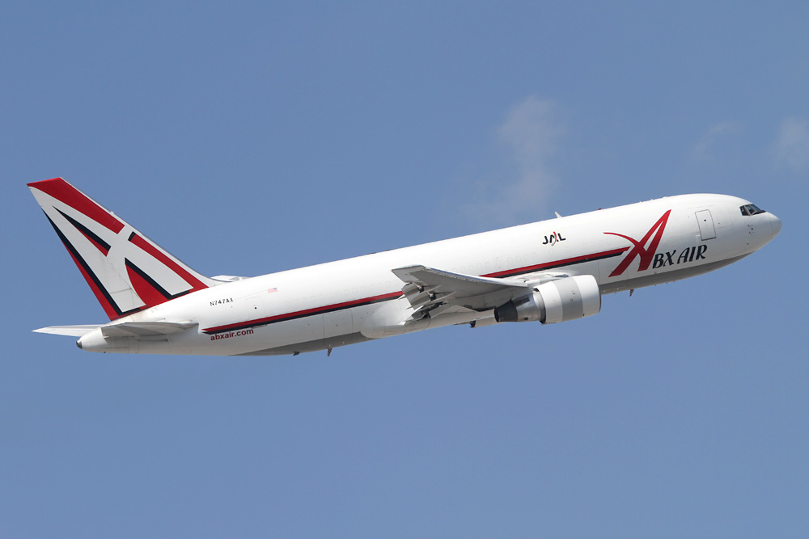
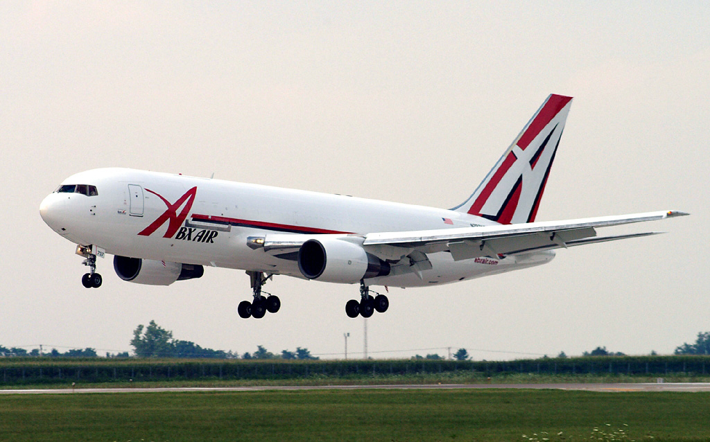

New Chicago Route Operated By ABX
Toby's Aviation, 09 July, 2020


Ohio-headquartered ABX Air has introduced a new cargo route through East Midlands airport,
utilising its fleet of Boeing 767 freighter aircraft. The new service will route between
Chicago O’Hare Airport (ORD) & East Midlands (EMA), then continuing into Cologne (CGN).
In full, the route will operate Cincinnati-Chicago-East Midlands-Cologne-East
Midlands-Cincinnati-Chicago on behalf of DHL on Tuesdays, Wednesdays & Thursdays.
CVG 06:25 - ORD 06:27
ORD 09:00 - EMA 23:50
EMA 02:00 - CGN 04:00
CGN 12:30 - EMA 13:00
EMA 15:00 - ORD 18:00
ORD 23:24 - CVG 01:40(+1)
All times are local to their respective location.